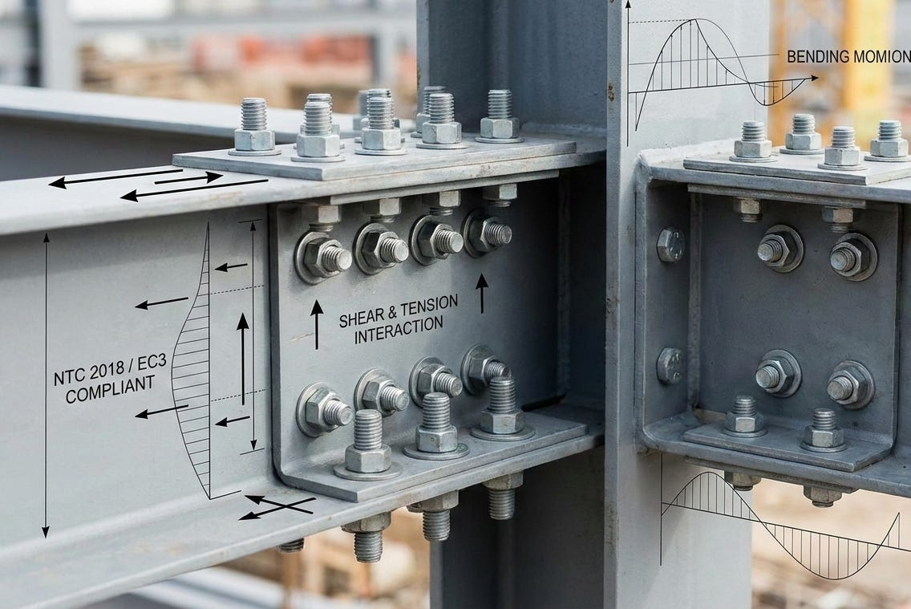

Analisi delle Giunzioni Bullonate

Formule di riferimento
\[F_{v,Ed,1} = \frac{V_{Ed}}{n}\]
\[F_{v,Ed,2} = \frac{M_{Ed} \cdot r_i}{\sum r_j^2}\]
\[F_{Ed} = \sqrt{F_{v,Ed,1}^2 + F_{v,Ed,2}^2}\]
\[e_1, e_2 \geq 1.2 d_0\]
\[p_1 \geq 2.2 d_0, p_2 \geq 2.4 d_0\]
\[F_{v,Rd} = \frac{\alpha_v \cdot f_{ub} \cdot A_{res}}{\gamma_{M2}}\]
\[F_{b,Rd} = \frac{k_1 \cdot \alpha_b \cdot f_{tk} \cdot d \cdot t}{\gamma_{M2}}\]
\[F_{t,Rd} = \frac{0.9 \cdot f_{ub} \cdot A_{res}}{\gamma_{M2}}\]
\[B_{p,Rd} = \frac{0.6 \cdot \pi \cdot d_m \cdot t_p \cdot f_{tk}}{\gamma_{M2}}\]
\[\frac{F_{v,Ed}}{F_{v,Rd}} + \frac{F_{t,Ed}}{1.4 \cdot F_{t,Rd}} \leq 1.0\]
\[F_{s,Rd} = \frac{n \cdot \mu \cdot F_{p,C}}{\gamma_{M3}}\]
\[V_{eff,1,Rd} = \frac{f_{tk} \cdot A_{nt}}{\gamma_{M2}} + \frac{f_{yk} \cdot A_{nv}}{\sqrt{3} \cdot \gamma_{M0}}\]
Impostazione tecnica
La progettazione delle unioni metalliche è uno aspetto importante dell'ingegneria strutturale. Un nodo mal progettato può compromettere la duttilità globale della struttura o portare a rotture fragili improvvise. In questo articolo vedremo le principali verifiche indicate dalle NTC 2018 e dall' Eurocodice 3.
Prima di procedere al calcolo, è fondamentale classificare correttamente il tipo di collegamento. Le normative distinguono le unioni in base alla modalità di trasmissione degli sforzi:
- Unioni a taglio (non precaricate): lavorano a contatto (rifollamento). Il bullone agisce come un perno che impedisce lo scorrimento relativo delle piastre.
- Unioni ad attrito (precaricate): sfruttano la forza di precompressione esercitata dai bulloni ad alta resistenza (classi 8.8 o 10.9) per generare attrito tra le superfici, impedendo lo scorrimento.
La resistenza del sistema dipende dalla classe del bullone. Ricordiamo che il primo numero della classe (es. 8 .8) indica la resistenza a rottura (fub = 800 MPa), mentre il secondo indica il rapporto tra snervamento e rottura (fyb/fub).
In presenza di un momento flettente complanare alla giunzione (MEd), un'analisi elastica lineare distribuisce le forze sui bulloni in funzione della loro posizione geometrica. La forza di progetto sul singolo bullone (FEd) è la risultante vettoriale di:
- Componente da Taglio Diretto:
distribuita uniformemente tra gli n bulloni.
- Componente da Momento:
dove r i è la distanza radiale del bullone dal baricentro del gruppo bullonato.
La risultante vettoriale F Ed,max rappresenta il carico di progetto per il bullone più sollecitato.
Le varie normative, per evitare rotture fragili, introducono dei limiti geometrici legati alla posizione del singolo bullone:
- Distanze minime dai bordi:
- Interassi minimi:
Verifiche allo Stato Limite Ultimo (SLU)
Resistenza al Taglio del Bullone (F v,Rd )
La capacità del bullone di resistere al taglio dipende dalla posizione del piano di taglio. Se questo intercetta la parte filettata, l'area resistente si riduce drasticamente (Ares è circa il 75-80% dell'area nominale A).
Dove:
- α v = 0.6 per classi 4.6, 5.6, 8.8 (se il piano di taglio è sul gambo non filettato)
- α v = 0.5 per classi 4.8, 5.8, 6.8, 10.9 (o se il piano di taglio intercetta la filettatura).
Resistenza al Rifollamento ( F b,Rd )
Il rifollamento è la verifica della plasticizzazione della lamiera a contatto con il gambo del bullone. Non dipende solo dal materiale, ma dalla geometria della foratura.
I coefficienti α b e k 1 sono calcolati dinamicamente distinguendo tra:
- Bulloni di bordo: penalizzati dalle distanze ridotte (e1, e2) verso l'estremità della piastra.
- Bulloni interni: influenzati dagli interassi (p1, p2).
Trazione e Punzonamento
Nelle unioni soggette a trazione assiale, oltre alla resistenza del gambo (\(F_{t,Rd}\)), è vitale verificare il punzonamento (\(B_{p,Rd}\)), ovvero il rischio che la testa del bullone o il dado "sfondino" la lamiera, specialmente in presenza di spessori sottili.
- Trazione:
- Punzonamento:
Interazione Taglio-Trazione
Quando un bullone è soggetto simultaneamente a taglio e trazione, la resistenza si riduce secondo un dominio di interazione. La normativa prevede la seguente verifica lineare/quadratica:
Attrito e Block Shear
Unioni ad Attrito (Precaricate)
Per le unioni di Categoria B e C (resistenti ad attrito), la capacità dipende dal coefficiente di attrito "mu" (legato alla classe di trattamento superficiale, da A a D) e dal numero di superfici a contatto "n".
Nota: forze di trazione esterne riducono la precompressione effettiva, diminuendo la resistenza all'attrito.
Rottura a Blocco (Block Shear)
Spesso trascurato, il "Block Shear" è un meccanismo di collasso che strappa un intero blocco di materiale lungo il perimetro dei fori. La verifica combina la resistenza a rottura lungo la superficie tesa e la resistenza a snervamento (o rottura) lungo la superficie tagliata.
Nota operativa.
L'applicazione rigorosa di tutte le formule normative, il calcolo manuale dei vari coefficienti e la verifica delle interazioni geometriche richiedono tempo e precisione.
In chiusura, lo stesso procedimento puo essere organizzato in un foglio di calcolo o in un piccolo strumento di verifica, mantenendo visibili formule, ipotesi e risultati intermedi.
- Calcolo automatico delle sollecitazioni su ogni bullone (taglio, trazione, momento).
- Verifica istantanea di tutti i parametri geometrici (e1, e2, p1, p2).
- Report dettagliati con le formule EC3/NTC esplicitate per taglio, rifollamento e block shear.
- Database materiali e bulloneria pre-caricato.